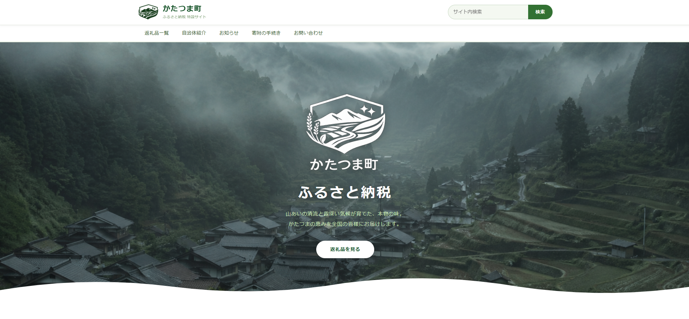

このふるさと納税のサイト、なんか変じゃないですか
♡ 0
うまく説明できないんだけど、気になってしまったので書いておく。
先週、ふるさと納税を何にしようか調べていて「かたつま町」というところのサイトを開いた。どこにでもありそうな返礼品カタログで、最初はとくに何も思わなかった。
でもなんとなく読み進めていたら、じわじわと違和感が出てきた。うまく言葉にできないんだけど、返礼品の商品をちゃんと読むと「え？」ってなる部分があって、それから気になって他のページも見ていたら、なんか全体的にちょっとおかしい気がしてきた。
気のせいかもしれない。普通のサイトをただ深読みしてるだけかもしれない。でも一度気になってしまうと、どうしても頭から離れなくて、結局その日の夜もまた開いてしまった。
自分でもう少し調べようとしたんだけど、正直どこから手をつければいいのかわからなかった。サイトをひと通り見て、なんとなくこの先に何かあるんじゃないかという感覚はあるんだけど、それ以上のことは私には無理だった。
こういうの得意な人いたら、見てみてほしいです。私が見落としているだけで何もない普通のサイトなのか、それとも本当に何かあるのか、どっちなのか知りたい。
以下にリンクを置いておきます。
かたつま町 ふるさと納税特設サイト
katatsuma-furusato/index.html